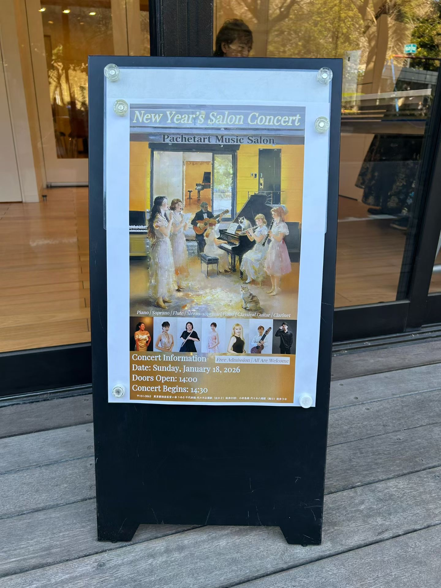

PROJECTS

所属するアンサンブル団体「La Dolce」は、複数の音楽大学の在学生および卒業生によって構成されています。主なメンバーはピアノ、フルート、ギター、オペラを専攻としており、演奏会ごとに新たな出演者を迎えることもあります。 私たちはリラックスした雰囲気のサロンコンサートを中心に、東京を拠点として活動しています。演奏形式はソロ、室内楽、声楽・オペラなど多岐にわたります。 音楽の普及を目指し、聴き手との距離を縮めるとともに、広く知られていない優れた作品の紹介や作曲家の魅力を発信することを目的としています。
所属的室内乐团“La Dolce”由东京圈多所音乐大学的在读生及毕业生组成。核心成员涵盖钢琴、长笛、古典吉他及声乐歌剧等专业，并根据每场音乐会的需求邀请不同的客座演奏者。 我们以东京为中心，主要举办氛围轻松惬意的沙龙音乐会。演出形式多样，涵盖独奏、室内乐、声乐及歌剧等。 乐团致力于推广音乐艺术，在拉近与听众距离的同时，积极发掘并传播那些鲜为人知的优秀作品及作曲家的独特魅力。
”La Dolce” is an ensemble composed of current students and graduates from various music universities. Its core members specialize in piano, flute, guitar, and opera, and additional performers are invited for each concert as needed。 Based in Tokyo, the ensemble focuses primarily on presenting salon-style concerts in a relaxed and intimate atmosphere. Its performances span a wide range of formats, including solo repertoire, chamber music, and vocal and operatic works。 With the aim of promoting music, La Dolce seeks to foster a closer connection with its audience while also introducing outstanding yet lesser-known repertoire and showcasing the distinctive voices of composers。
2025.12 — Christmas Salon Concert(渋谷ホール)
Piano / Flute / Soprano / Guitar
2025年のクリスマス・サロンコンサートでは、古典作品から現代ジャズまで、幅広い時代の音楽をお届けします。リラックスした雰囲気の中で、多彩なプログラムをお楽しみいただけます。
また、本公演の収益はすべて、保護動物の支援団体へ寄付いたします。
Piano / Flute / Soprano / Guitar
2025年的圣诞沙龙音乐会中，我们演奏了跨越时空、涵盖从古典名作到现代爵士的多元音乐。在轻松的氛围中，为观众呈现了丰富多彩的节目。
同时，本次演出的全部收益已悉数捐赠给流浪动物保护组织。
Piano / Flute / Soprano / Guitar
Our 2025 Christmas Salon Concert brought together music from across the eras, ranging from the classics to contemporary jazz.
It was a wonderful evening of diverse performances held in a cozy, relaxed setting.
We are also proud to share that 100% of the concert's proceeds were donated to support animal rescue groups.


2026.1 — New Year's Salon Concert(代々木 Pachetart Music Salon)
Flute / Guitar / Clarinet / Soprano / Mezzo-Soprano / Piano
新年コンサートでは、各曲の演奏前に、出演者が作品の内容や作曲家について分かりやすく、楽しくご紹介いたします。
また本公演では、東京音楽大学大学院の作曲専攻の学生によるオリジナルの芸術歌曲も取り上げ、新進作曲家の作品を広く紹介・発信してまいります。
さらに今回は、より多彩な楽器編成を取り入れ、重奏作品も充実したプログラムとなっております。
Flute / Guitar / Clarinet / Soprano / Mezzo-Soprano / Piano
新年音乐会中，我们在每首作品演奏前，由演奏者对作品内容及作曲家进行通俗易懂且富有趣味的介绍。
此外，本场演出还特别演出了东京音乐大学大学院作曲专业学生的原创艺术歌曲，致力于推广新生代作曲家的作品。
本次音乐会在编制上也更加丰富，加入了多种乐器组合，呈现更加多样化的重奏作品。
Flute / Guitar / Clarinet / Soprano / Mezzo-Soprano / Piano
In this New Year's concert, performers introduced each piece in an engaging and accessible way before the performance, offering insights into the music and its composers.
The program also featured original art songs composed by graduate students from the Composition Department of Tokyo College of Music, aiming to promote emerging composers.
In addition, the concert incorporated a wider variety of instrumental combinations, presenting a richer and more diverse chamber music program.


